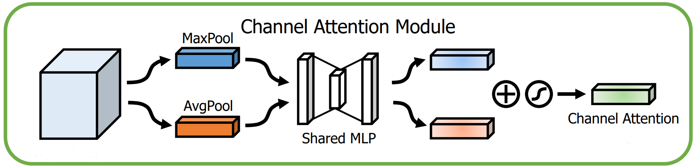
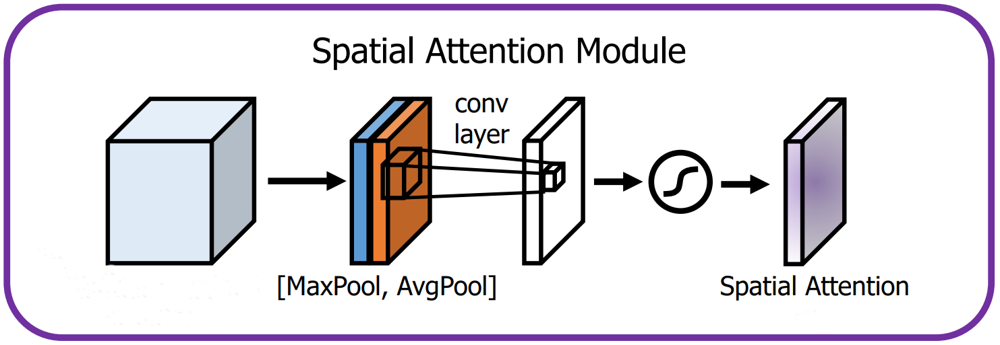
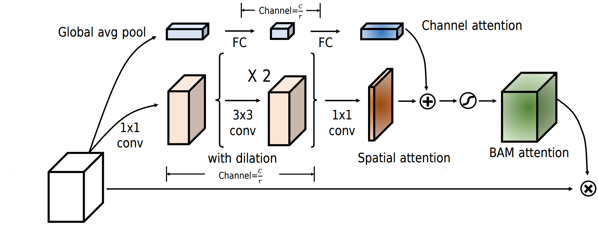
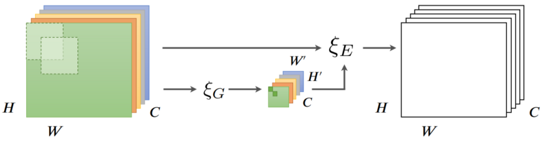
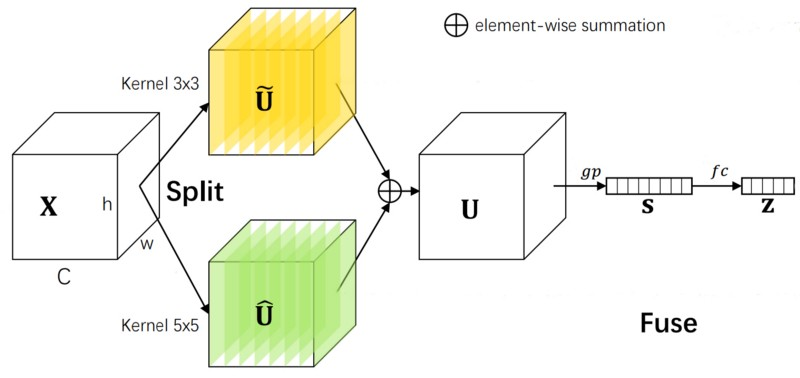
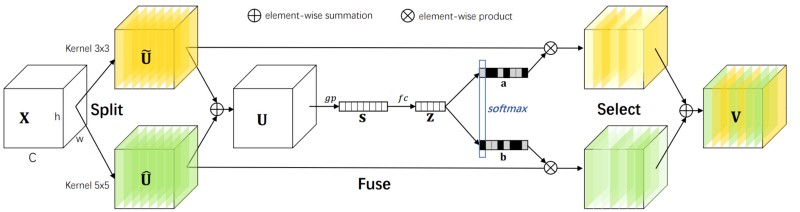

In this article, popular attention mechanisms in computer vision will be examined and implemented in PyTorch. Particularly, each module’s methodology is analyzed, with detailed descriptions, visualizations, and code, plus optional mathematical explanations for those preferring more formal descriptions. Results on ImageNet are also included.
The GitHub repository for this article can be found here.
Table of Contents
- Introduction
- Sqeueeze-and-Excitaiton
- Efficient Channel Attention
- Convolutional Block Attention Module
- Bottleneck Attention Module
- Gather-Excite
- Selective Kernel
1. Introduction
As the name suggests, attention enables deep learning models to pay attention to certain parts of the data[1], similar to how attention in humans works[10]. For instance, in natural language processing (NLP), attention-based models can attend more
to words that convey more information and ignore ones that are somewhat akin to noise and do not contribute
much to the meaning of the text[14] (figure 1.1).

However, there is no objective importance associated with each word that holds across all cases. For example, one can disregard the words "growled" and "stranger" when deducing the colour of the dog, as they have no bearing on it, and only the first few words are necessary to determine the answer (figure 1.2). A pivotal characteristic of attention in deep learning is that it is conditioned on the input and is sufficiently versatile to manage such situations.

In computer vision, a similar idea would be for a neural network to focus on a particular part of an image. Figure 1.3 exhibits this concept; a model would greatly benefit from an attention mechanism that could focus on the lionesses.

There are four major kinds of attention in computer vision[6], with in-depth explanations throughout the article:
- Channel attention: What to attend to
- Spatial attention: Where to attend to
- Branch attention: Which branch to attend to
- Temporal attention: When to attend to
The first three are covered in this article, but temporal attention is not discussed since temporal deep learning in general
is a complicated topic that demands a separate article.
Equation 1.1, proposed in [6], is a general definition of attention
for an arbitrary input \(X\) that is helpful for gaining a high-level, intuitive understanding of attention. \(g\) is a function that
generates a set of attention values for every element (i.e., how much to attend to, that is, the importance of, each element),
and \(f\) processes \(X\) using the output of \(g\), e.g., multiply every element by its attention value so the more important ones would have larger magnitudes and be more salient.
Finally, table 1.1 summarizes recurring mathematical notations that will be referred to in this article.
| Notation | Definition |
|---|---|
| \(s\) (lowercase italicized letter) | Scaler |
| \(\bold v\) (lowercase bold letter) | Vector |
| \(\bold M\) (uppercase bold letter) | Matrix |
| \(T\) (uppercase italicized letter) | Tensor with a minimum rank of 3 |
| \(\bold v_i\) | \(i^{\textrm{th}}\) element of \(\bold v\); one-based indexing |
| \(\bold M_{i,j}\) | Entry of \(\bold M\) at row \(i\) and column \(j\); one-based indexing |
| \(T_{i,j,k}\) | Entry of \(\bold T\) with index \(i\) for the first axis, \(j\) for the second one, \(k\) for the third, and so forth; one-based indexing |
| \(:\) | Used to mean entire axis when indexing matrices or tensors, e.g., \(\bold M_{i,:}\) accesses row \(i\) |
| \(\delta\) | ReLU |
| \(\sigma\) | Sigmoid |
| \(\odot\) | Element-wise product |
| \(*\) | Convolution operation |
| \(\textrm{BN}\) | Batch normalization; parameters not shown |
2. Squeeze-and-Excitation
One of the earliest and most impactful attention mechanisms in computer vision is squeeze-and-excitation (SE)[9], an algorithm ubiquitous in numerous state-of-the-art (SOTA) networks such as EfficientNet[21][22], Normalizer-Free Networks (NFNet)
[2][3], and RegNet[16]. Research evinces various channels in a feature map represent different objects[6], and channel attention enables the network to dynamically focus on salient channels, i.e., objects.
Unsurprisingly, SE is constituted of two ingredients; the squeeze module, where the activations of each channel are aggregated through global average pooling, and the excitation module, whose job is to capture channel interactions through a bottleneck multilayer perceptron (MLP). Formally,
let \(X \isin \reals^{c \times h \times w} \), \(F_{sq}\), and \(F_{ex}\) be the input, squeeze module, and excitation
module respectively. \(F_{sq}\), i.e., global average pooling, is applied over \(X\) to obtain \(\bold z \isin \reals^{c}\) (equation 2.1). Without global pooling, the excitation module would not have access to global information and be confined to a small receptive field.
\(\bold z\) is transformed with \(F_{ex}\) to acquire an attention vector \(\bold a \isin \reals^{c}\), where \(\bold a_{c'}\) may be viewed as the importance of the \(c'^{\textrm{th}}\) channel for this particular input. \(F_{ex}\) is an MLP containing two linear layers with weight matrices \(\bold W_{1} \isin \reals^{\frac {c} {r} \times c}\) and \(\bold W_{2} \isin \reals^{c \times \frac {c} {r}}\), plus ReLU between them and the sigmoid function at the end (equation 2.2). \(r\) is a hyperparameter that controls the size of the bottleneck, which assuages the computational complexity and helps generalization. $$ \bold a := F_{ex}(\bold z; \bold W_1, \bold W_2) := \sigma (\bold W_{2} \delta (\bold W_{1}\bold z)) $$
\(\tilde {X} \isin \reals^{c \times h \times w}\), the final output, is computed by multiplying every feature map by its associated attention value from \(\bold a \) (equation 2.3).
$$ \tilde{X}_{c',h', w'} := \bold a_{c'}X_{c', h', w'} $$A graphical illustration can be found in figure 2.1, and SE is implemented in snippet 2.1.

|
|
Empirically, squeeze-and-excitation performs very well. By prepending SE immediately before the residual addition
of the non-identity branch of each residual block in popular convolutional neural networks (CNN), top-1 accuracy is boosted
on ImageNet (table 2.1).
| Architecture | Plain | With SE |
|---|---|---|
| ResNet-50 | 75.20% | 76.71% |
| ResNet-101 | 76.83% | 77.62% |
| ResNet-152 | 77.58% | 78.43% |
| ResNeXt-50 | 77.89% | 78.90% |
| ResNeXt-101 | 78.82% | 79.30% |
| MobileNet | 71.60% | 74.70% |
3. Efficient Channel Attention
[23] discovered a deficiency of SE that degrades performance and proposed efficient channel attention (ECA) to remedy it for better accuracy and efficiency.
An important aspect of squeeze-and-excitation is the bottleneck in the excitation module, where dimensionality reduction (DR) is performed to parsimoniously compute channel interactions. Due to DR, the attention values and their associated channels have only indirect correspondence, and there is no direct mapping between the channels and their attention values (figure 3.1).

Three derivatives of squeeze-and-excitation, differing in terms of their excitation modules, were developed to measure the ramifications of dimensionality reduction. SE-Var-1, where the excitation module is merely the sigmoid function (figure 3.2), SE-Var-2, where the excitation module element-wise multiplies the pooled channels by learnable weights, followed, as usual, by sigmoid (figure 3.3), and SE-Var-3, where the excitation module is a fully-connected layer, again succeeded by sigmoid (figure 3.4). SE-Var-3 is the same as effective squeeze-and-excitation (eSE)[11], proposed as a refinement over SE for instance segmentation in a separate, unrelated paper.


The mathematical formulations for SE-Var-1, SE-Var-2, and SE-Var-3 are nearly identical to squeeze-and-excitation, except for the definition of their excitation modules. Equations 3.1, 3.2, and 3.3 define \(F_{ex}\) for these variants, where \(\bold z \isin \reals^{c}\) is the output of the squeeze module, that is, the output of global average pooling. Snippet 3.1 implements them.
$$ F_{ex}(\bold z) := \sigma (\bold z) $$$$ F_{ex}(\bold z; \bold w) := \sigma (\bold w \odot \bold z) $$
$$ F_{ex}(\bold z; \bold W) := \sigma (\bold W \bold z) $$
|
|
Since neither of these variants employs dimensionality reduction, pitting them against SE on ImageNet with ResNet-50 as the backbone offers an idea of the consequences of DR (table 3.1). Nonetheless, this is not an apples-to-apples comparison because SE-Var-1 and SE-Var-2 do not model channel relationships and are therefore technically not channel attention modules.
| Variant | Top-1 accuracy |
|---|---|
| Original SE | 76.71% |
| SE-Var-1 | 76.00% |
| SE-Var-2 | 77.07% |
| SE-Var-3 | 77.42% |
SE-Var-2 attests to the merit of direct channel-to-attention communication, for it is far lighter than SE but exceeds its score. Its principal drawback is that there are no inter-channel interactions, an issue that is solved by the more accurate SE-Var-3 using a linear layer that connects every channel to every attention value. Sadly, SE-Var-3’s cost is quadratic, and there being no bottleneck, the computational complexity is markedly increased.
A compromise between SE-Var-2 and SE-Var-3 is made; in lieu of SE-Var-3's global cross-channel attention, where every two channels interact with one another, local cross-channel relationships are utilized. Concretely, each channel interacts only with its \(k\) neighbours through linear layers that operate on \(k\) channels at a time. To further reduce the parameter count, the linear layers can share parameters, thereby being equivalent to a one-dimensional convolution sliding over the pooled channels. This final version, illustrated in figure 3.5 and formulated mathematically in equation 3.4, is ECA and has the advantages of both inter-channel interactions and direct channel-to-attention communication whilst preserving, for the most part, the efficiency of SE-Var-2.

The computational complexity of SE-Var-2, SE-Var-3, and ECA are outlined in table 3.2. Notably, assuming \(k \ll c \), which is virtually always true, ECA is far more efficient than SE-Var-3 and is almost on par with Se-Var-2 in terms of complexity. It is also more efficient than the original SE.
| Variant | Complexity |
|---|---|
| SE-Var-2 | \(\mathcal{O}(c)\) |
| SE-Var-3 | \(\mathcal{O}(c^2)\) |
| ECA | \(\mathcal{O}(kc)\) |
The PyTorch implementation of ECA is in snippet 3.2, and its chief difference from the other variants is that the output of the average pooling layer must be in a channels-last format to be able to be passed to a one-dimensional convolution. These modifications need to be reverted before the output is returned.
|
|
ECA outperforms SE with ResNets of different depths and MobileNetV2 at a lower computational cost and parameter count. The positioning of ECA is identical to that of SE.
| Architecture | Plain | With SE | With ECA |
|---|---|---|---|
| ResNet-50 | 75.20% | 76.71% | 77.48% |
| ResNet-101 | 76.83% | 77.62% | 78.65% |
| ResNet-152 | 77.58% | 78.43% | 78.92% |
| MobileNetV2 | 71.64% | 72.42% | 72.56% |
Lastly, it must be noted that \(k\) is an important hyperparameter that should be tuned. The authors propound a heuristic to automatically select the kernel size given the number of channels that raises accuracy, but they mysteriously dispense with it and do not inspect it further. Hence, it was not discussed here either.
4. Convolutional Block Attention Module
Following the efficacy of attention-based networks, [24] proposed convolutional block attention module (CBAM), another attention mechanism for CNNs. CBAM is a hybrid attention module that mixes channel attention with spatial attention. Whereas channel attention can be thought of as a dynamic module for determining what channels to focus on, spatial attention dynamically decides where to focus on, i.e., which spatial positions or pixels are more important.
The channel attention module of CBAM is similar to SE, but the two diverge in one aspect, viz., CBAM also utilizes max pooling in addition to average pooling. Concretely, there are two squeeze modules, \(F_{sq}^1\) and \(F_{sq}^2\), corresponding to global average and global max pooling, that transform the input \(X \isin \reals^{c \times h \times w}\) to get \(\bold z_1 \isin \reals^{c}\) and \(\bold z_2 \isin \reals^{c}\) (equations 4.1 and 4.2). Intuitively, \(\bold z_1\) is a smooth representation of every channel, but \(\bold z_2\) contains the most noticeable activation for each one, and they thus complement one another.
$$ \bold z_{1_{c'}} := F_{sq}^1(X) := \frac {1} {hw} \sum_{h' = 1} ^{h} \sum_{w' = 1} ^{w} X_{c',h',w'} $$$$ \bold z_{2_{c'}} := F_{sq}^2(X) := \max (X_{c',:,:}) $$
Since \(\bold z_1\) and \(\bold z_2\) are semantically related, they do not require separate MLPs for modelling channel relationships, and a single MLP, again parameterized by \(\bold W_{1} \isin \reals^{\frac {c} {r} \times c}\) and \(\bold W_{2} \isin \reals^{\frac {c} {r} \times c}\), transforms them both to obtain two attention vectors, \(\bold a'_1 \isin \reals^{c}\) and \(\bold a'_2 \isin \reals^{c}\) (equations 4.3 and 4.4). $$ \bold a'_1 := \bold W_{2} \delta (\bold W_{1}\bold z_1) $$
$$ \bold a'_2 := \bold W_{2} \delta (\bold W_{1}\bold z_2) $$
Sigmoid was not applied because \(\bold a'_1\) and \(\bold a'_2\) first need to be combined through summation, and then they can be normalized to acquire a single attention vector \(\bold a \isin \reals^{c}\) (equation 4.5), with the remainder of the process being the same as SE, i.e., multiplying each channel in the original input by its attention value from \(\bold a\). $$ \bold a := \sigma (\bold a'_1 + \bold a'_2) $$
Figure 4.1 illustrates this process, and it is implemented in snippet 4.1.

|
|
Compared to average pooling alone, this version of channel attention attains better accuracy on ImageNet with a ResNet-50 (table 4.1).
| Channel attention | Top-1 accuracy |
|---|---|
| SE | 76.86% |
| CBAM’s channel attention | 77.20% |
CBAM’s channel attention can also be tailored for spatial attention. To do so, the data is first average and max pooled along the channel axis; that is, rather than aggregating the activations of each channel, the activations of every spatial position \((h', w')\) are aggregated to get \(\bold Z_1 \isin \reals^{h \times w}\) and \(\bold Z_2 \isin \reals^{h \times w}\) (equations 4.6 and 4.7). $$ \bold Z_{1_{h', w'}} := \frac {1} {c} \sum_{c' = 1} ^{c} X_{c',h',w'} $$
$$ \bold Z_{2_{h', w'}} := \max(X_{:,h',w'}) $$
\(\bold Z_1\) and \(\bold Z_2\) are concatenated to acquire a double-channelled tensor \(Z \isin \reals^{2 \times h \times w}\). \(Z\) can be seen as the equivalent of \(\bold z\) from SE or \(\bold z_1\) and \(\bold z_2\) from CBAM's channel attention. Therefore, the next step is to use this descriptor to capture spatial interactions. Naively, an MLP may be employed, as was the case with channel attention, but that would not be practical for a few reasons. First, for large feature maps early in the network, a fully-connected layer would be too inefficient because of its quadratic cost. Second, a fully-connected layer’s input dimension is static, meaning it would not be usable for any data size other than what it was trained on. Finally, it would have properties like variance to translation (i.e., a small shift in the input would wholly change the output), which are not suitable for spatial data.
Instead, convolutions would be more apposite; they are inexpensive, able to manage different resolutions, and have inductive biases such as invariance to translation that are appropriate for spatial data. Ergo, CBAM uses convolutions to model spatial dependencies without the defects of a multilayer perceptron (albeit one disadvantage is that the receptive field is confined to the kernel size).
An attention matrix \(\bold A \isin \reals^{h \times w}\) is extracted by running \(Z\) through a \(k\) x \(k\) convolutional layer with weight matrix \(W \bold \isin \reals^{1 \times 2 \times k \times k}\) and normalizing it with sigmoid (equation 4.8). The strategy for calculating the output, \(\tilde{X} \isin \reals^{c \times h \times w}\), is similar to that of the channel attention module; each activation is multiplied by its attention value from \(\bold A \) (equation 4.9). $$ \bold A := \sigma (W * Z) $$
$$ \tilde{X}_{c', h', w'} := \bold A_{h',w'}X_{c',h',w'} $$
Figure 4.2 depicts CBAM's spatial attention module, and it is implemented in snippet 4.2.

|
|
These two modules (channel and spatial attention) are run sequentially to get CBAM (snippet 4.3).
|
|
Thorough experiments on ImageNet reveal that CBAM typically outperforms SE with a host of backbones. Some are included in table 4.2. Once again, CBAM is situated before the residual summation of the non-identity branch of each residual block.
| Architecture | Plain | With SE | With CBAM |
|---|---|---|---|
| ResNet-50 | 75.44% | 76.86% | 77.34% |
| ResNet-101 | 76.62% | 77.65% | 78.49% |
| ResNeXt-50 | 77.15% | 78.09% | 78.08% |
| ResNeXt-101 | 78.46% | 78.83% | 78.93% |
| MobileNet | 68.61% | 70.03% | 70.99% |
5. Block Attention Module
Bottleneck attention module (BAM)[15] was released concurrently with CBAM by the same researchers, and the overall philosophy remains intact (i.e., SE-esque channel attention plus spatial attention). However, BAM’s attention modules differ from the ones considered so far, in that they return unnormalized attention tensors as opposed to returning the input multiplied by normalized attention values, for reasons that shall be explained shortly.
The channel attention module is nearly indistinguishable from SE, but batch normalization is applied before ReLU and, as mentioned, sigmoid is left out. Equation 5.1 describes how this unnormalized attention vector, \(\bold a^′ \isin \reals^{c}\), is calculated, with weight matrices \(\bold W_{1} \isin \reals^{\frac {c} {r} \times c}\) and \(\bold W_{2} \isin \reals^{c \times \frac {c} {r}}\), and snippet 5.1 implements it.
$$ \bold a' := \bold W_{2} \delta (\textrm{BN}(\bold W_{1}\bold z)) $$
|
|
BAM's spatial attention is more nuanced than that of CBAM. The first distinction is that instead of a large-kernelled convolution, two dilated \(3\) x \(3\) convolutions capture spatial interactions. Also, in lieu of pooling for compressing the channels, \(1\) x \(1\) convolutions are utilized. Lastly, this compression happens in two stages; specifically, the channels are initially reduced by a factor of \(r\) (the same reduction factor as that of BAM's channel attention module), spatial relationships are modelled through the \(3\) x \(3\) convolutions, and the number of channels is shrunk a second time, this time to \(1\). Every convolution, other than the last one, is succeeded by batch normalization and ReLU. The mathematical expression for this module would be too convoluted, and the reader is directly referred to snippet 5.2 instead. Again, an unnormalized attention matrix \(\bold A' \isin \reals^{h \times w}\) is outputted.
|
|
To transform the input using the attention values and get the final output, \(\bold a'\) and \(\bold A'\) are element-wise multiplied by one another and normalized to get a final attention tensor \(A \isin \reals^{c \times h \times w}\) (equation 5.2). The output \(\tilde X \isin \reals^{c \times h \times w}\) is \(X\) element-wise multiplied by \(A + 1\) (equation 5.3). Snippet 5.3 implements the finalized BAM, and figure 5.1 visualizes it. $$ A_{c',h',w'} := \sigma (\bold A'_{h',w'} \bold a'_{c'}) $$
$$ \tilde X := X \odot (A + 1) $$
|
|

Table 5.1 summarizes the top-1 accuracy of BAM with a few architectures. Unlike SE, ECA, and CBAM, BAM is appended only after each network stage and is not present in every residual block. This table might lead one to believe BAM is inferior to SE and CBAM. Yet, across other tasks, datasets, and architectures, BAM is on par with CBAM, and there is no clear winner between the two.
| Architecture | Plain | With SE | With CBAM | With BAM |
|---|---|---|---|---|
| ResNet-50 | 75.44% | 76.86% | 77.34% | 75.98% |
| ResNet-101 | 76.62% | 77.65% | 78.49% | 77.56% |
| ResNeXt-50 | 77.15% | 78.09% | 78.08% | 77.15% |
| MobileNet | 68.61% | 70.03% | 70.99% | 69.42% |
6. Gather-Excite
Theoretically, the receptive fields of convolutional neural networks are sufficiently extensive to cover the totality of input images. However, the effective receptive field (ERF) of a network, that is, the actual size of its receptive field in practice, gauged empirically, is much smaller and is not the same as the theoretical receptive field[13].
For instance, the ERFs of CNNs of different depths with \(3\) x \(3\) kernels occupy only a fraction of their theoretical receptive fields (figure 6.1). The issue is exacerbated the deeper a network gets, or if there exist non-linearities.
Hence, spatially distant neurons do not communicate, thereby hindering neural networks’ performance on tasks where adequate long-range interactions are indispensable. Ergo, [7] suggests gather-excite (GE), a module that aggregates data from large spatial neighbourhoods via a function \(\xi G\), also known as the gather module, and redistributes the information back to every activation with another function \(\xi E\), also known as the excite module. In other words, the data is first spatially downsampled through \(\xi G\) so the resulting neurons contain information from activations that were previously distant and would thus normally not interact with one another. Then, \(\xi E\) redistributes the information of these neurons to the original activations to essentially force interactions amongst far-off neurons. Figure 6.2 provides an overview of GE.

This might sound unduly abstract, and a concrete example for input \(X \isin \reals^{c \times h \times w}\) would be helpful. \(\xi G\) can be average pooling with a kernel size of \(2e - 1\) and a stride of \(e\). \(e\), known as the extent, is proportional to the size of the receptive fields of the neurons of the output of \(\xi G\), \(Z \isin \reals^{c \times \frac {h} {e} \times \frac {w} {e}}\) (equation 6.1). \(\xi E\) could simply enlarge \(Z\) to the shape of the original input with nearest-neighbour interpolation and normalize it to get an attention tensor \(A \isin \reals^{c \times h \times w}\) (equation 6.2). Akin to the other attention mechanisms, \(A\) is element-wise multiplied by the original input \(X\) to get \(\tilde X \isin \reals^{c \times h \times w}\), the final output (equation 6.3). A special case of this is when \(\xi G\) is global average pooling, in which case it would be equivalent to SE-Var-1 from the ECA paper. By convention, \(e\) is set to \(0\) to signify global pooling. $$ Z := \xi G(X) := \textrm{AvgPool}(X; \textrm{kernel size}=2e-1, \textrm{stride}=e) $$
$$ A := \sigma(\textrm{Interpolate}(Z)) $$
$$ \tilde X := X \odot A $$
This parameter-free rudimentary module, implemented in snippet 6.1, is called GE-θ- (θ- symbolizes the lack of parameters) and consistently improves the performance of ResNet-50 (table 6.1). Importantly, the larger the extent, the better the results, a trend that is maintained throughout the rest of this section and indicates the significance of long-range interactions.
|
|
| Extent | Top-1 accuracy |
|---|---|
| Original | 76.71% |
| 2 | 76.89% |
| 4 | 77.13% |
| 8 | 77.60% |
| Global | 77.86% |
Naturally, parameterizing GE-θ- should further help, so the authors decide to supplant average pooling in \(\xi G\) with convolutions to get GE-θ. Specifically, \(3\) x \(3\) depthwise convolutions with strides of \(2\) are used to downsample the input, where the number of convolutions is \(\log_2(e)\) to ensure that the input is downsampled by a factor of \(e\). For a global extent, a single depthwise convolution with a kernel size of \(h \times w\) is used. Batch normalization is also appended after each convolution, and for non-global extents, the convolutions are interleaved with ReLU. GE-θ is implemented in snippet 6.2 and outperforms GE-θ- (table 6.2).
|
|
| Extent | GE-θ- | GE-θ |
|---|---|---|
| 2 | 76.89% | 77.29% |
| 4 | 77.13% | 77.81% |
| 8 | 77.60% | 77.87% |
| Global | 77.86% | 78.00% |
Inspired by the potency of a parameterized gather unit, \(\xi E\) is also parameterized. Particularly, it is superseded by the excitation module from SE, with \(W_{1} \isin \reals^{\frac {c} {16} \times c \times 1 \times 1}\) and \(W_{2} \isin \reals^{c \times \frac {c} {16} \times 1 \times 1}\) as its parameters, followed by interpolation (equation 6.4). Since the spatial shape of the input is not necessarily \(1\) x \(1\), \(W_1\) and \(W_2\) cannot always be linear layers and are instead \(1\) x \(1\) convolutions. $$ \xi E(Z; \bold W_1, \bold W_2) := \sigma(\textrm{Interpolate}((W_{2} * \delta (W_{1} * Z)))) $$
GE-θ+ is the name of this final iteration of GE, and it combines a parameterized \(\xi G\) with a parameterized \(\xi E\) (snippet 6.3). With ResNet-50 and ResNet-101, GE-θ+ surpasses GE-θ-, GE-θ, and SE (table 6.3).
|
|
| Architecture | Plain | SE | GE-θ- | GE-θ | GE-θ+ |
|---|---|---|---|---|---|
| ResNet-50 | 76.70% | 77.88% | 77.86% | 78.00% | 78.12% |
| ResNet-101 | 77.80% | 79.06% | 78.53% | 78.54% | 79.26% |
| ShuffleNet | 67.40% | 68.76% | N.A. | 68.20% | 69.88% |
7. Selective Kernel
Convolutional neural networks, since their nascent days, have been inspired by biological neurons in the primary visual cortex (V1) and aim to mimic the vision processing of animals. Kunihiko Fukushima, for example, developed the neocognitron in 1980[5], a primitive archetype of CNNs that was based on the research of David Hubel and Torsten Wiesel on simple and complex cells ubiquitous in the V1[8]. Simple cells detect bar-like shapes of particular orientations (e.g., edges), whereas complex cells are composed using the integration of several simple cells, thereby exhibiting properties such as spatial invariance and recognition of more complex patterns like polygons.
Similarly, the Inception family of architectures[19][20][18] collects multi-scale information from images using convolutions of various kernel sizes to be faithful to the fact that the receptive field sizes of nearby neurons in the visual cortex might differ (figure 7.1). Notwithstanding, it failed to address a key ingredient of biological receptive fields, namely, how the receptive field size is adjusted according to the stimulus and is not static[17].
The selective kernel (SK)[12] module is designed to bridge this gap and is intended as a drop-in replacement for traditional convolutions with fixed kernel sizes. It contains multiple branches of different kernel sizes and uses an attention mechanism to adaptively aggregate their outputs so more weight is assigned to branches with kernel sizes relevant for the current input.
SK’s first constituent is split, where the goal is to transform the data via multiple branches, each with a convolutional layer of a different kernel size (figure 7.2). For input \(X \isin \reals^{c \times h \times w}\) and two as the number of branches, there would be two convolutional layers (kernel sizes \(3\) x \(3\) and \(5\) x \(5\)) with weight tensors \(W_1 \isin \reals^{c \times c \times 3 \times 3}\) and \(W_2 \isin \reals^{c \times c \times 5 \times 5}\). They convolve over \(X\), followed by batch normalization and ReLU, to obtain \(U_1 \isin \reals^{c \times h \times w}\) and \(U_2 \isin \reals^{c \times h \times w}\). In general, the output of branch \(m’\), with \(m\) as the number of branches, is calculated by convolving over \(X\) with \(W_{m’}\) and applying batch normalization and ReLU (equation 7.1).
$$ U_i := \delta (\textrm{BN}(W_{m'} * X)) $$
The implementation of this component of SK slightly differs from the diagram and description above, in that rather than enlarging the kernel size, the dilation value is increased, and the kernel size is kept at \(3\) x \(3\) for efficiency. For instance, in lieu of a \(5\) x \(5\) convolution, a \(3\) x \(3\) convolution with a dilation value of \(2\) is used. Also, since SK is branded as a replacement for regular convolutions, it must accept other arguments, namely, the stride and group size, although there are other ones, e.g., padding mode, that are not supported by this implementation (snippet 7.1).
|
|
Next, a vector representation of \(U_1\) and \(U_2\) needs to be computed, which shall later be used to calculate attention values. That is done so by first summing them to get \(U \isin \reals^{c \times h \times w}\) (equation 7.2) and performing global average pooling over \(U\) to get \(\bold s \isin \reals^{c}\) (equation 7.3). Then, a feature vector \(\bold z \isin \reals^{\frac {c} {r}}\) (dimension reduced by a factor of \(r\) for efficiency) is extracted through transforming \(\bold s\) via a linear layer with weight matrix \(\bold W \isin \reals^{\frac {c} {r} \times c}\), followed by batch normalization and ReLU (equation 7.4).
$$ U = \sum_{m'=1} ^ {m} U_{m'} $$
$$ \bold s_{c'} := \frac {1} {hw} \sum_{h' = 1} ^{h} \sum_{w' = 1} ^{w} U_{c',h',w'} $$
$$ \bold z := \delta(\textrm{BN}(\bold W \bold s)) $$
This step is known as fuse and is depicted in figure 7.3 and implemented in snippet 7.2.

|
|
Lastly, SK's select module calculates attention vectors for every branch using \(\bold z\). Particularly, for every branch with index \(m'\), there is a weight matrix \(\bold W_{m'} \isin \reals^{c \times \frac {c} {r}}\) that transforms \(\bold z\) into an unnormalized attention vector \(\bold a'_{m'} \isin \reals^{c}\) (equation 7.5). Subsequently, the softmax function is applied along the branch axis to get normalized attention vectors for every branch, namely, \(\bold a_{m'} \isin \reals^{c}\) (equation 7.6). The output of each branch is multiplied by its attention vector (i.e., each channel is multiplied by its associated attention value), and the results across all branches are summed to get the final output \(\tilde X \isin \reals^{c \times h \times w}\) (equation 7.7). $$ \bold a'_{m'} := \bold W_{m'} \bold z $$
$$ \bold a_{m'} := \frac {e^{a_{m'}}} {\sum_{m''=1} ^ m e^{\bold a_{m''}}} $$
$$ \tilde X_{c',h',w'} := \sum_{m'=1} ^ {m} \bold a_{m'_{c'}}U_{m'_{c',h',w'}} $$
The select unit and the complete version of SK are depicted in figure 7.4 and implemented in snippet 7.3. Some readers may have observed how similar squeeze-and-excitation is to the fuse and select components of SK; in fact, SK with a single branch is simply SE.

|
|
self.fc is equivalent to \(m\) distinct linear layers. Line 62 reshapes the output of self.fc so that there is a separate axis for the branches.For testing SK, \(3\) x \(3\) convolutions in regular CNNs are replaced with SK modules containing two branches, and the other hyperparameters, e.g., the width, group size, and stride, are the same. Experiments with ResNeXt and ShuffleNetV2 corroborate the power of SK and adaptive receptive field sizes (table 7.1).
| Architecture | Plain | With SE | With SK |
|---|---|---|---|
| ResNeXt-50 | 77.77% | 78.88% | 79.21% |
| ResNeXt-101 | 78.89% | 79.42% | 79.81% |
| ShuffleNetV2 | 69.43% | 70.53% | 71.64% |
References
[1] Gianni Brauwers, Flavius Frasincar. A General Survey on Attention Mechanisms in Deep Learning. In TKDE, 2021.
[2] Andrew Brock, Soham De, Samuel Smith. Characterizing signal propagation to close the performance gap in unnormalized ResNets. In ICLR, 2021.
[3] Andrew Brock, Soham De, Samuel Smith, Karen Simonyan. High-Performance Large-Scale Image Recognition Without Normalization. In ICML, 2021.
[4] Jia Deng, Wei Dong, Richard Socher, Li-Jia Li, Kai Li, Li Fei-Fei. ImageNet: A large-scale hierarchical image database. In CVPR, 2009.
[5] Kunihiko Fukushima. Neocognitron: A Self-organizing Neural Network Model for a Mechanism of Pattern Recognition Unaffected by Shift in Position. In Biological Cybernetics, 1980.
[6] Meng-Hao Guo, Tian-Xing Xu, Jiang-Jiang Liu, Zheng-Ning Liu, Peng-Tao Jiang, Tai-Jiang Mu, Song-Hai Zhang, Ralph Martin, Ming-Ming Cheng, Shi-Min Hu. Attention Mechanisms in Computer Vision: A Survey. In Computational Visual Media, 2022.
[7] Jie Hu, Li Shen, Samuel Albanie, Gang Sun, Andrea Vedaldi. Gather-Excite: Exploiting Feature Context in Convolutional Neural Networks. In NeurIPS, 2018.
[8] David Hubel, Torsten Wiesel. Receptive fields, binocular interaction and functional architecture in the cat’s visual cortex. In The Journal of Physiology, 1962.
[9] Jie Hu, Li Shen, Samuel Albanie, Gang Sun, Enhua Wu. Squeeze-and-Excitation Networks. In CVPR, 2018.
[10] Nancy Kanwisher. The Human Brain course at MIT, Lecture 24. 2019.
[11] Youngwan Lee, Jongyoul Park. CenterMask: Real-Time Anchor-Free Instance Segmentation. In CVPR, 2020.
[12] Xiang Li, Wenhai Wang, Xiaolin Hu, Jian Yang. Selective Kernel Networks. In CVPR, 2019.
[13] Wenjie Luo, Yujia Li, Raquel Urtasun, Richard Zemel. Understanding the Effective Receptive Field in Deep Convolutional Neural Networks. In NeurIPS, 2016.
[14] Andrew Ng. The Deep Learning Specialization course, Course 5. 2018.
[15] Jongchan Park, Sanghyun Woo, Joon-Young Lee, In Kweon. BAM: Bottleneck Attention Module. In BMCV, 2018.
[16] Ilija Radosavovic, Raj Kosaraju, Ross Girshick, Kaiming He, Piotr Dollár. Designing Network Design Spaces. In CVPR, 2020.
[17] Lothar Spillmann, Birgitta Dresp-Langley, Chia-Huei Tseng. Beyond the classical receptive field: The effect of contextual stimuli. In Journal of Vision, 2015.
[18] Christian Szegedy, Sergey Ioffe, Vincent Vanhoucke, Alex Alemi. Inception-v4, Inception-ResNet and the Impact of Residual Connections on Learning. In CVPR, 2017.
[19] Christian Szegedy, Wei Liu, Yangqing Jia, Pierre Sermanet, Scott Reed, Dragomir Anguelov, Dumitru Erhan, Vincent Vanhoucke, Andrew Rabinovich. Going Deeper with Convolutions. In CVPR, 2015.
[20] Christian Szegedy, Vincent Vanhoucke, Sergey Ioffe, Jonathon Shlens, Zbigniew Wojna. Rethinking the Inception Architecture for Computer Vision. In CVPR, 2016.
[21] Mingxing Tan, Quoc Le. EfficientNet: Rethinking Model Scaling for Convolutional Neural Networks. In ICML, 2019.
[22] Mingxing Tan, Quoc Le. EfficientNetV2: Smaller Models and Faster Training. In ICML, 2021.
[23] Qilong Wang, Banggu Wu, Pengfei Zhu, Peihua Li, Wangmeng Zuo, Qinghua Hu. ECA-Net: Efficient Channel Attention for Deep Convolutional Neural Networks. In CVPR, 2020.
[24] Sanghyun Woo, Jongchan Park, Joon-Young Lee, In Kweon. CBAM: Convolutional Block Attention Module. In ECCV, 2018.